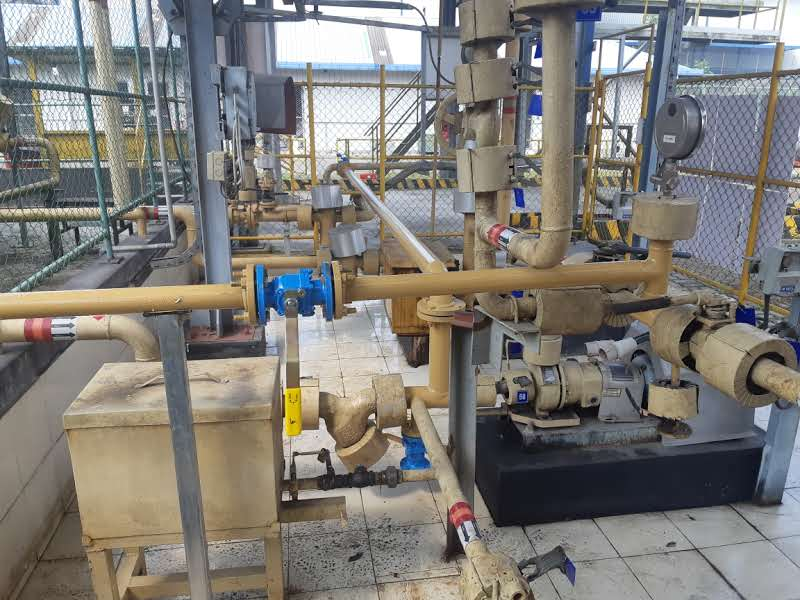
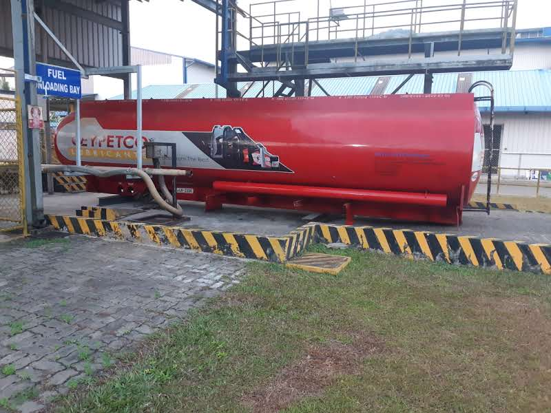

🏆 Fuel Crisis Business Continuity Project
Project Objective:
Develop and implement business continuity measures during Sri Lanka's fuel crisis to ensure uninterrupted factory operations and safeguard production output.
Description
Developed and implemented business continuity measures during Sri Lanka's fuel crisis to ensure uninterrupted factory operations. The project focused on strengthening fuel security, improving storage capacity, optimizing consumption control, and implementing proactive monitoring systems to eliminate the risk of production interruptions.
Project Photos


Key Actions
- Expanded diesel storage capacity by 50%.
- Modified fuel handling and transfer systems.
- Implemented predictive monitoring and fuel consumption tracking.
- Managed fuel planning and inventory control.
- Coordinated contingency measures for uninterrupted operations.
Key Results
- ✅ Zero fuel-related production stoppages.
- ✅ 50% increase in diesel storage capacity.
- ✅ Maintained uninterrupted factory operations throughout the fuel crisis.
- ✅ Improved fuel visibility and consumption management.
- ✅ Contributed to winning the Supply Chain Hero Team Award.
Skills Demonstrated
Risk Management • Utilities Engineering • Businessxcellence
../index.html← Back to Portfolio